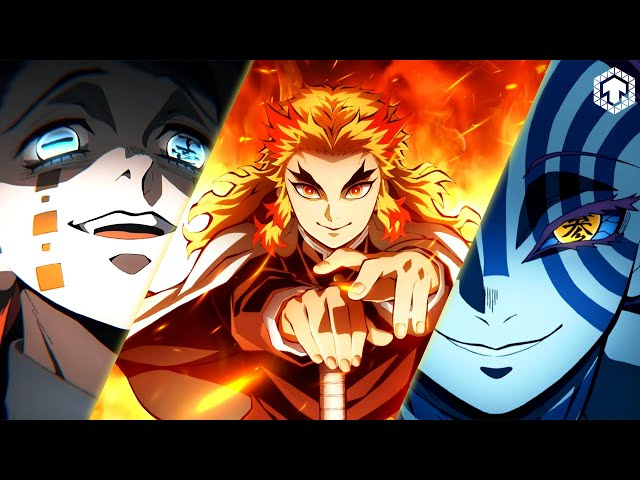
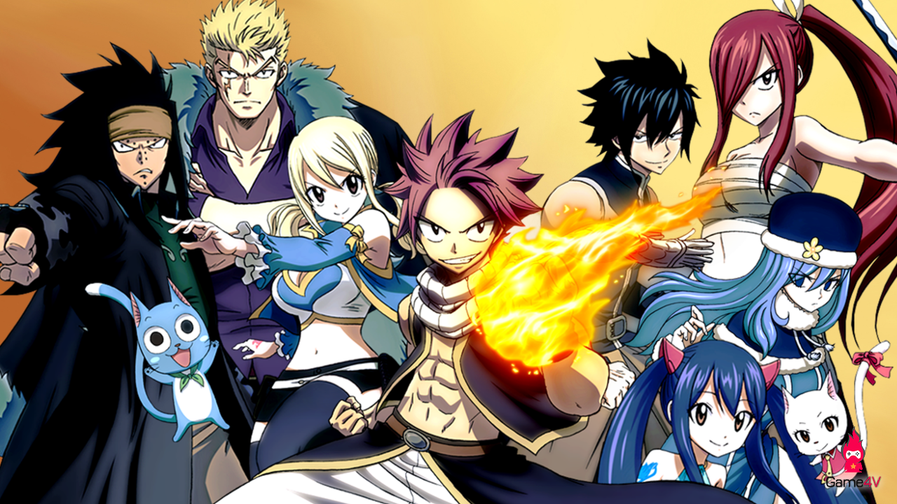
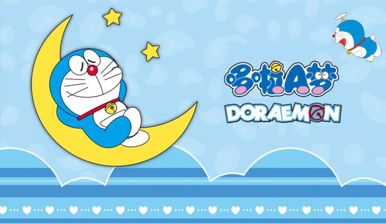
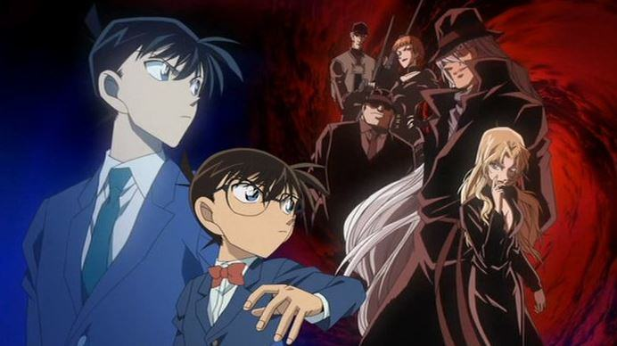

Điện tử
Music
Movie
Chuyện phim xoay quanh cậu bé thông minh, hiền lành tên là Tanjiro, nhà của cậu ở vùng núi hẻo lánh làm nghề bán than củi. Trong một lần đi chơi về trễ, Tanjiro phát hiện cả nhà của mình bị quỷ sát hại, chỉ còn lại cô em gái Nezuko còn sống nhưng bị hóa thành quỷ. Không may, ngay lúc âý, Thủy trụ Tomioka Giyuu (thợ săn quỷ) xuất hiện và có ý định tiêu diệt Nezuko. Nhận thấy cô em gái dù biến thành quỷ những vẫn còn giữ được tính người, Giyuu không những không giết mà còn mang cả hai anh em đến gặp sư phụ của mình – Thủy trụ Urokodaki Sakonji. Tại đây, họ huấn luyện Tanjiro để trở thành thợ săn quỷ và tìm cách biến Nezuko trở lại thành người.
 Trận chiến trên "Chuyến tàu vô tận"
Nhờ bản tính thông minh, Tanjiro đã có thể thuần thục các kỹ năng để gia nhập Sát quỷ đội sau 3 năm. Và đây cũng là lúc cậu biết được chính Chúa quỷ Kibutsuji Muzan đã gây ra cái chết của cả gia đình mình. Từ đây, hai anh em bắt đầu cuộc hành trình tiêu diệt loài quỷ bảo vệ con người.
Bộ truyện không chỉ “gây sốt” trong một khu vực nhất định mà còn lan rộng ra toàn cầu. Hội pháp sư Fairy Tail đã được dịch ra nhiều thứ tiếng, gần như được bạn đọc khắp châu lục biết đến. Tính đến nay, mặc dù đã trải qua hơn hai thập kỷ, cơn sốt của bộ truyện vẫn chưa ngừng hạ nhiệt. Hội pháp sư Fairy Tail là một bộ phim hoạt hình phiêu lưu, hành động và kì ảo kể về những con người có những khả năng đặc biệt với những phép thuật nhiệm màu có thể làm biến đổi thế giới nằm ở một vùng đất mang tên Fiore.
 Nhóm Natsu và những người bạn
Câu chuyện bắt đầu khi Lucy, một tiểu thư con nhà hào môn quyền quý đã sẵn sàng từ bỏ gia đình giàu có của mình ra đi để tìm kiếm cuộc sống cô mong muốn. Trên đường đi, Lucy đã gặp Natsu, một thành viên thuộc Fairy Tail cùng một con mèo biết bay biết nói là Happy. Cùng trải qua một số chuyện, Natsu đã mời Lucy cùng gia nhập Fairy Tail. Cả hai đều là những pháp như trẻ có những quyền năng mạnh mẽ, Natsu được mệnh danh là “Sát long ma đạo sĩ” với khả năng của rồng lửa có thể điều khiển được lửa để chiến đấu.
Chú mèo máy Doraemon (Doremon) không chỉ là một biểu tượng của văn hóa truyện tranh Nhật Bản mà còn là người bạn thân thiết thời ấu thơ của nhiều trẻ em trên toàn thế giới, đặc biệt là Việt Nam.
 Doreamon đang mơ mộng
Theo như lời kể của tác giả Fujiko F. Fujio, trong một buổi tối, lúc ông đang suy nghĩ về đề tài cho cuốn manga mới thì bỗng có một con mèo hoang mò vào nhà ông để tìm chỗ ngủ. Sáng hôm sau, ông tỉnh dậy thì đã muộn giờ làm và vội vã bước xuống nhà nên dẫm phải con lật đật – món đồ chơi của cô con gái. Khi đó, ông chợt nảy ra một ý tưởng nhân vật mới có hình dáng kết hợp của một con mèo với lật đật. Và đó chính là Doraemon với cái tên được ghép từ 2 bộ phận: Từ “Dora” bắt nguồn từ “Doraneko” (chú mèo đi lạc, mèo hoang) như khi tác giả gặp chính tại căn nhà của mình. “Emon” đơn giản là một ending-name (tên kết thúc) phổ biến trong tên người Nhật trước kia.
Ra đời vào thời điểm dòng truyện tranh kỳ bí đang được đón nhận, cùng nội dung hấp dẫn, gây tò mò, Thám tử lừng danh Conan nhanh chóng trở nên ăn khách. Mỗi tập truyện xuất bản đều được công chúng háo hức chờ đợi.
 Truy lùng "Tổ chức Áo đen" trong movie 12
Bộ truyện xoay quanh nhân vật chính là thám tử trung học tài ba Kudo Shinichi. Anh có cả ngoại hình và tài năng, đặc biệt yêu thích việc tham gia phá án và thường xuyên giúp đỡ cảnh sát Nhật Bản tìm ra chân tướng những vụ án hóc búa. Trong một lần đi chơi cùng cô bạn gái Ran Mori, Shinichi đụng độ Tổ chức Áo đen và bị cho uống một viên thuốc đặc biệt, khiến cơ thể cậu trở về hình dáng của học sinh lớp 1. Nhằm che giấu thân phận, Shinichi lấy tên mới là Edogawa Conan và sống tại nhà của Ran cùng người cha là thám tử gà mờ Kogoro Mori. Mỗi vụ án của Thám tử lừng danh Conan thường kéo dài trong vài chương, ở đa dạng các bối cảnh khác nhau. Bắt đầu chuyện có thể từ những cuộc đi chơi, ăn uống, chuyến dã ngoại, thăm thú viện bảo tàng... sau đó những tình huống bí ẩn, rùng rợn liên tiếp xảy ra, những cái chết bất ngờ không báo trước, buộc Conan phải theo đuổi tận cùng sự việc để tìm ra hung thủ. Do đang bị nhốt trong cơ thể trẻ con, Conan phải mượn giọng nói ông Kogoro và để ông thay mình phá án trong trạng thái ngủ gật.
Là bộ truyện tranh dành cho lứa tuổi thiếu niên, song Thám tử lừng danh Conan khá táo bạo trong việc sáng tạo các vụ án mạng, với nhiều hình thức gây án khác nhau. Mỗi câu chuyện đều cài cắm những thông điệp nhân văn, ý nghĩa về xã hội, về mối quan hệ giữa con người với con người. Bên cạnh đó, tuyến tình cảm giữa Shinichi và Ran, những pha tấu hài khó đỡ của ông Kogoro hay những nhân vật bí ẩn trong Tổ chức Áo đen, giúp tăng thêm gia vị cho tác phẩm.
P/s: Anime thì có nhiều phần và nhiều nội dung khác nhau, đây là một số anime mà tôi ưa thích, nếu bạn cảm thấy hứng thú thì có thể tìm hiểu thêm!!